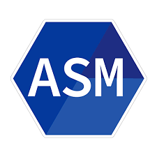

Lenguaje Assembly
Descripción.
El lenguaje
Assembly
es un tipo de lenguaje de programación de bajo nivel que se encuentra cerca del lenguaje de máquina. Utiliza mnemotécnicos y representaciones simbólicas para las instrucciones de la CPU. Proporciona un control directo sobre el hardware, incluidos registros y memoria. Es eficiente y se utiliza en situaciones que requieren optimización extrema, como
desarrollo de sistemas operativos
y controladores de dispositivos. El código
Assembly
es específico para la arquitectura de la CPU, lo que lo hace altamente especializado.
Características.
Bajo Nivel:
Assembly
es un lenguaje de bajo nivel que se encuentra cerca del código máquina, lo que permite una relación directa con la arquitectura del hardware.
Instrucciones Específicas de la Arquitectura: Cada conjunto de instrucciones de
Assembly
está diseñado para una arquitectura de procesador específica.
Acceso Directo al Hardware: Permite un control preciso y directo sobre los recursos del hardware, lo que lo hace ideal para programación de sistemas y controladores.
Eficiencia en el Uso de Recursos: Debido a su proximidad al hardware, los programas escritos en
Assembly
pueden ser altamente eficientes en términos de uso de recursos.
Programación Secuencial: Los programas en
Assembly
suelen seguir un flujo de ejecución secuencial, siguiendo el orden de las instrucciones en el código fuente.
Ausencia de Abstracciones de Alto Nivel: No cuenta con abstracciones de alto nivel, como variables o estructuras de control complejas, lo que puede hacer que la programación sea más desafiante.
Optimización Fina: Se utiliza a menudo en situaciones donde la optimización fina del código es esencial, como en el desarrollo de controladores de hardware.
Usos.
Programación de Sistemas Operativos
:
Assembly
se utiliza para desarrollar partes críticas de sistemas operativos debido a su capacidad para interactuar directamente con el hardware.
Desarrollo de Controladores de Dispositivos: Es común en el desarrollo de controladores de hardware, ya que permite un acceso directo y preciso a los recursos del dispositivo.
Programación de Microcontroladores: En sistemas embebidos y dispositivos con recursos limitados,
Assembly
se utiliza para programar microcontroladores de manera eficiente.
Análisis de Código Binario: Se utiliza para realizar ingeniería inversa y análisis de código binario para comprender y modificar programas ejecutables.
Optimización de Código Crítico: En situaciones donde la eficiencia extrema es crucial, como en algoritmos críticos para el rendimiento.
Hacking Ético: En el campo de la
ciberseguridad
, se utiliza para realizar pruebas de penetración y explotación de vulnerabilidades.
Programación de Dispositivos de Bajo Nivel: En el desarrollo de firmware y software de bajo nivel para dispositivos integrados.
